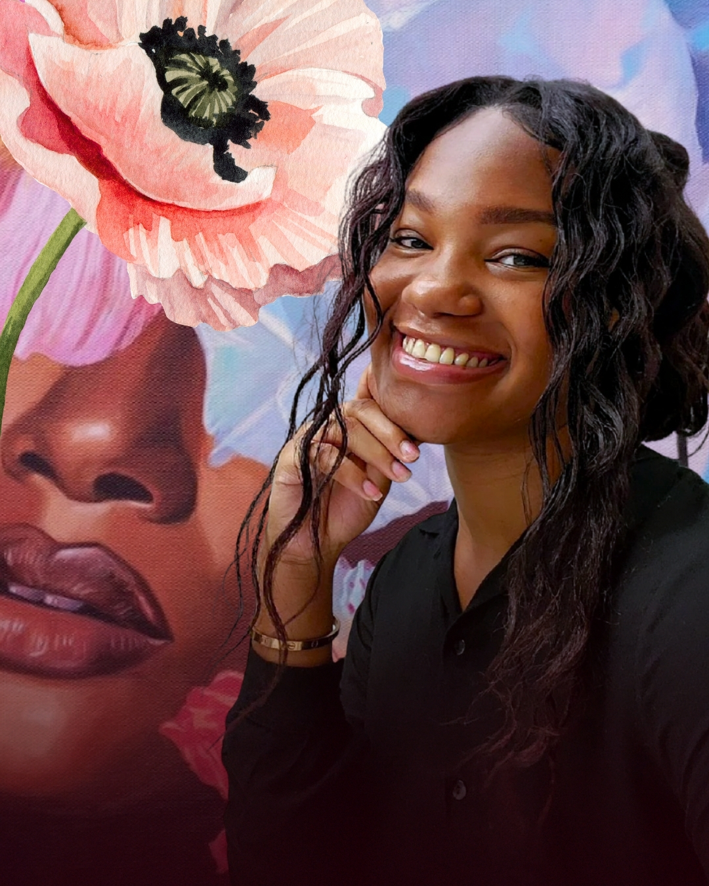
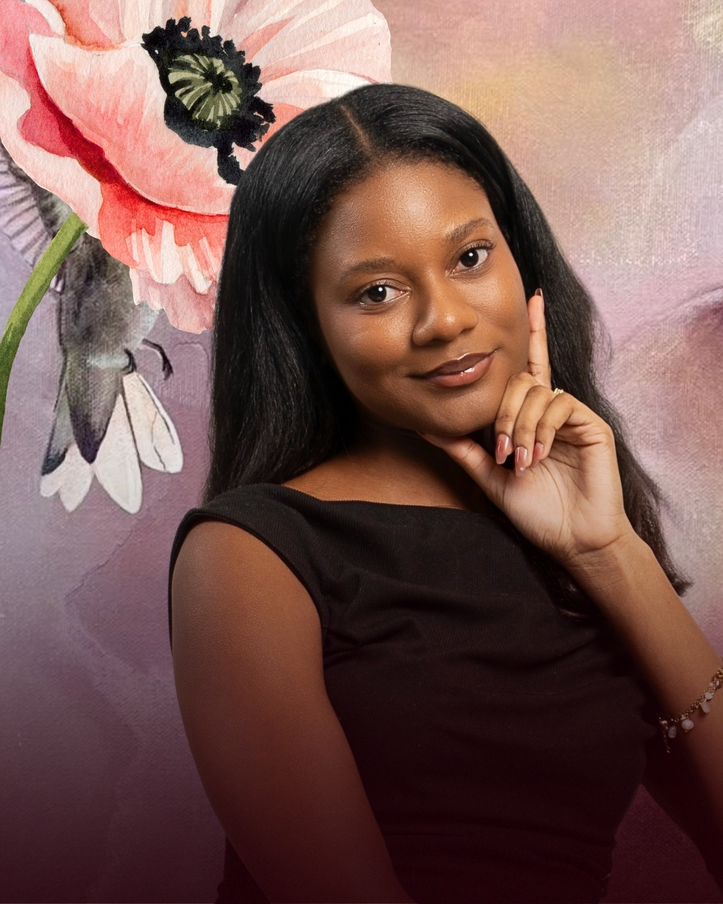
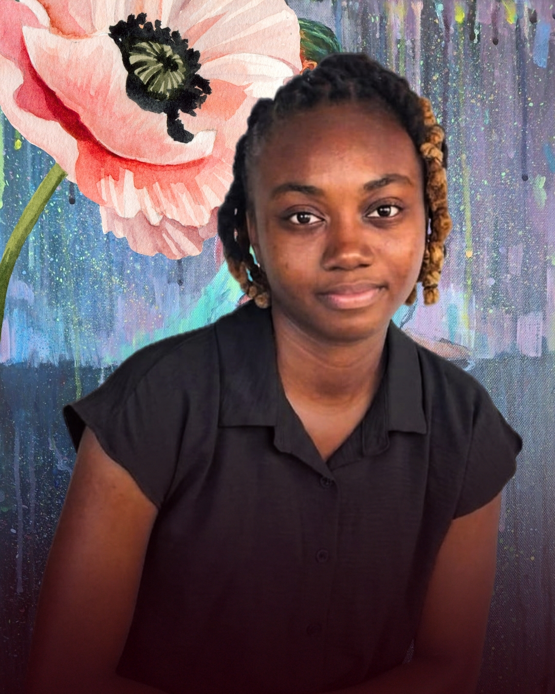
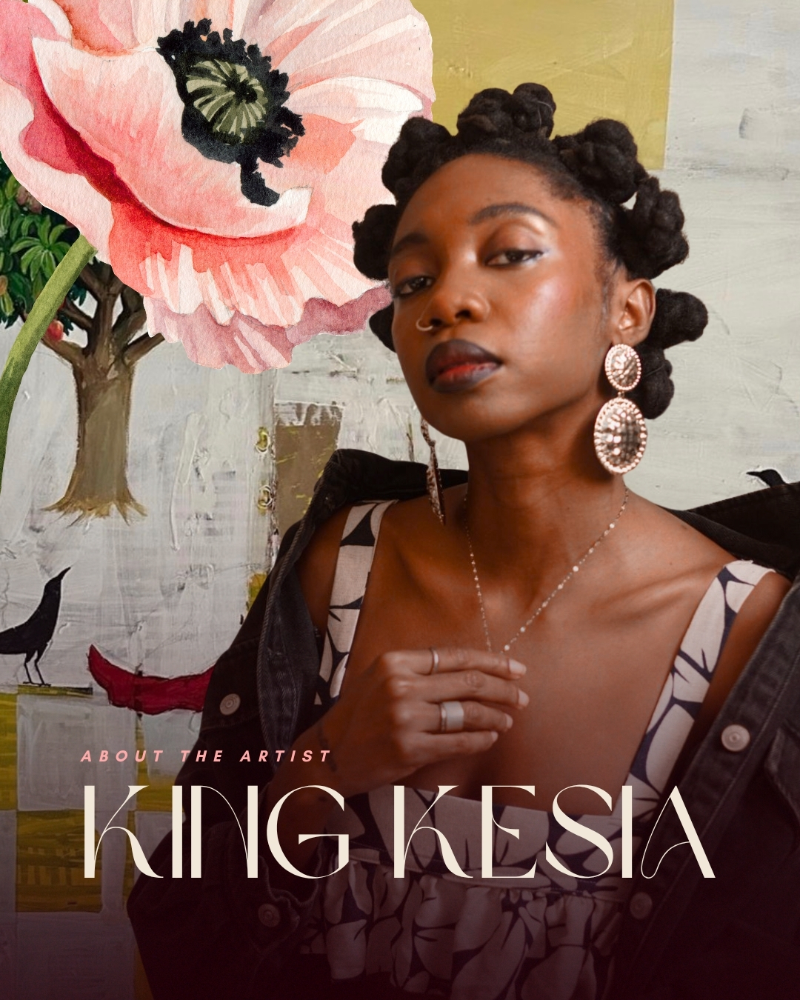

Alisha Smith
‘The Colourist’
Alisha Smith, known as The Colourist, is a self-taught Barbadian artist and creative entrepreneur, specializing in realistic portraiture, expressive depictions of local landscapes and more recently, still lifes.

Arianna Aleah
Abstract Realism
Arianna Aleah Holligan is a 22 year-old Barbadian artist, who's works are defined by the genre of Abstract Realism. Deeply inspired by femininity and the natural world, her paintings reflect personal and cultural narratives of quiet strength.
Featured Collections
The Weather Is Pink
Acrylic and Pearls on canvas
Behind the Brush: 35s Process
The Oracle
Acrylic on canvas
Full Creation Process: 1m
Perception: A Paradox
Acrylic and Pastel on canvas
Background Process: 37s

Jamila Greaves
Acrylic & Abstract Expression
Jamila Greaves (b.2001) depicts imaginative scenes of her inner world of feelings and emotions, mainly using the female form. She captures expression and motion through vibrant colors and an abstract style.
Featured Collections
Taking Flight
Acrylic on canvas
Ethereal Star
Acrylic on canvas
Glowing Lights To Darkest Nights
Acrylic on canvas

Kesia Estwick, known as King Kesia, expertly weaves nature and the multifacetedness of the African diaspora into her works with naturally derived elements in two and three-dimensional form.
Featured Collections
I’ll be Here
Acrylic on canvas
Mi Amor
Acrylic on canvas
Soul Tie Sisters
Mixed media on canvas